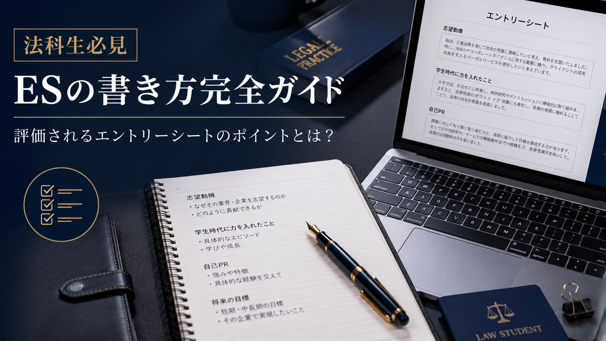
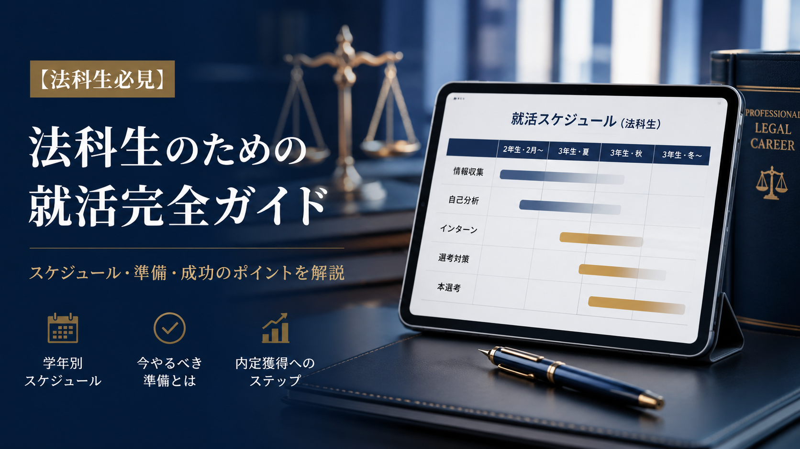

BLOG
ブログ
サマークラーク対策やES（エントリーシート）の書き方、法律事務所訪問のリアルなど、ロースクール生・法学部生に役立つ情報を発信していきます。
サマークラーク対策
【法学部・ロースクール生必見】サマークラークの持ち物完全ガイド！必須アイテムから知られざる神グッズまで
ノートパソコンや印鑑などの必須アイテムから、名刺・腕時計などの実用品、先輩が絶賛する神グッズまで、サマークラークの持ち物を完全ガイドします。

サマークラーク対策
【法学部・ロースクール生向け】サマークラークの身だしなみ・服装完全ガイド！好印象を与える鉄則とは
好印象を与えるスーツの選び方、シャツ・ネクタイ・靴の細部チェックポイント、髪型や爪などのグルーミングまで徹底解説します。

ウィンタークラーク解説
ウィンター・スプリングクラークとは？参加前に知るべき基礎知識と準備の極意
ウィンタークラーク・スプリングクラークとは何か、サマークラークとの違いから、参加前に行うべき4つの準備ステップまで解説します。
面接対策
法律事務所のクラーク面接対策！弁護士が惚れ込む「質問への答え方」とマナー
結論ファーストの論理的構成、解像度の高い逆質問の作り方、弁護士に好まれる人間性とマナーまで実践テクニックを紹介します。

ES対策
通過率が劇的に変わる！ウィンタークラークのES（エントリーシート）作成術と構成テンプレート
募集開始日の即時提出、自己PR・志望動機の構成テンプレート、実際のES文例まで、選考を突破する実践テクニックを紹介します。

クラーク比較
サマクラに落ちたら終わり？ウィンター・スプリングクラークの特徴と逆転のチャンス
サマークラークとウィンター・スプリングクラークの違いを比較し、冬・春のクラークで逆転合格を掴むための戦略を解説します。

就活スケジュール
【保存版】法律事務所の就活スケジュール！冬・春クラークを組み込む年間ロードマップ
ロースクール2年次から司法試験合格・入所にいたるまでの、法律事務所就活の完全版年間ロードマップを時系列で解説します。

完全ガイド
【法科大学院生向け】法律事務所の企業法務就活「完全ガイド」：求められる人物像と全体像
五大法律事務所・大阪四大・ブティック型事務所など規模別の分類から、企業法務が求める3つの本質的素養まで完全ガイドします。
サマークラーク解説
【ロースクール生必見】サマークラークとは？期間・内容・選考から内定直結の真実まで完全解説
サマークラークとは何か、期間・業務内容・給与から、四大法律事務所を含む選考フロー、内定に直結する仕組みまで徹底解説。ウィンタークラークとの違いもあわせて紹介します。
就活対策
【保存版】失敗しない！日本の法律事務所への就活スケジュールと対策ロードマップ
ロースクール生活と並行する法律事務所の就活スケジュールを完全解説。サマークラークとウィンタークラークの違い、四大法律事務所を含む事務所の種類、ES・面接対策まで保存版でまとめました。
サマークラーク対策
【ロースクール生向け】法律事務所のサマークラークに受かるESの書き方完全ガイド｜自己PR・志望動機のコツ
法律事務所のサマークラーク選考を通過するES（エントリーシート）の書き方を解説。自己PR・志望動機の構成フレームワークや採用担当者が見る評価ポイント、提出前チェックリストまで徹底ガイドします。